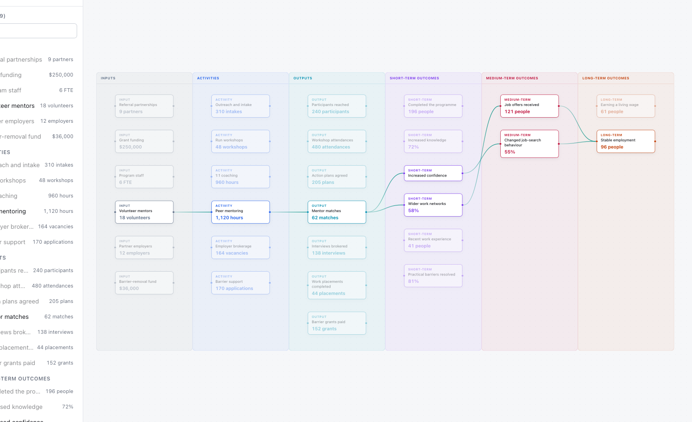
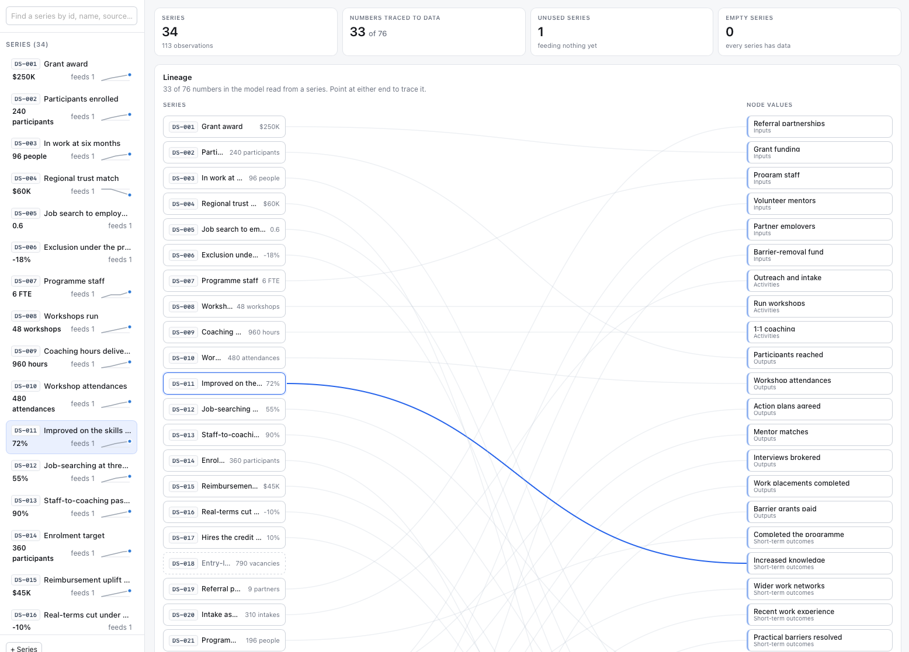
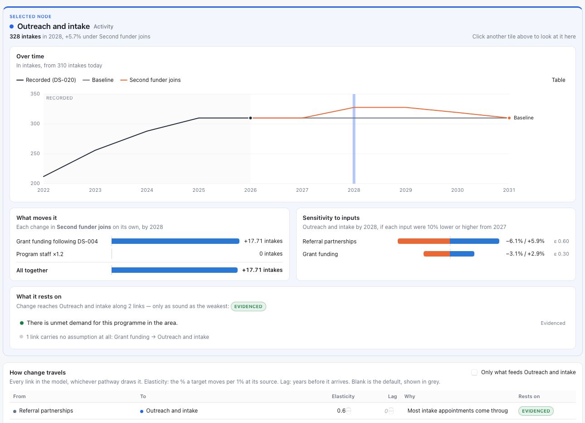
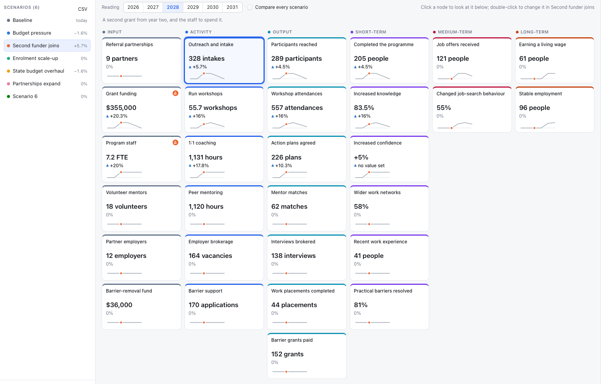

Phase 01Evaluative Foundation
The conceptual infrastructure that makes rigorous evaluation possible: stakeholder map, logic model, theory of change.
A four-phase evaluation pipeline. Each phase is a link in a chain and a standalone engagement.

Phase 01The conceptual infrastructure that makes rigorous evaluation possible: stakeholder map, logic model, theory of change.

Phase 02A practical, defensible system for collecting, managing and assuring the quality of evidence.

Phase 03Collected data turned into defensible evidence, with every finding rated for strength.

Phase 04Findings converted into systems that sustain learning and accountability over time.
Reports and communication support are deliverables, but the program team's active part in pursuing inquiry, scoping analysis and adopting new methods is central to both the ethics of the work and whether it achieves anything.
The implementation support professional coordinates the evaluation, shepherds findings into program changes, and helps build a habit of recursive improvement inside the team. The organization's staff co-create the frameworks, collection methods, pilots and data architecture alongside them. Deeper involvement in the technical work — analysis, research design, reporting — is there for teams that want it and have the time.
The sequence runs in one direction until it reaches recursion and integration, and then it loops: findings become program changes, outcomes feed the next round of evaluation, and the cycle repeats as often as the program needs before graduation.
A scoping conversation and intake assessment establish whether the program is a fit, and what already exists to build on.
The implementation support professional joins the program team, and learning goals and timelines are agreed together.
A structured review of the frameworks, data and systems already in place, so nothing that works gets rebuilt.
Phases 1 to 3 of the pipeline, co-created with the organization's staff. Phase 2 is the heaviest lift on both sides.
What the evaluation found, turned into material for the community, the board and the funders.
Findings become program changes, outcomes feed the next evaluation cycle, and the loop runs as often as it needs to.
After two years, embedded support draws back under a written handoff plan agreed with the program team.
Continue on a discounted monitoring retainer or take a written implementation guide. Our network and literature briefs stay open either way.
What is this program trying to do, for whom, and why do we believe it will work?
This phase builds the conceptual infrastructure that makes rigorous evaluation possible. Without it, data collection has no direction and findings have nothing to be interpreted against. It is also where the program team starts to think in evaluative terms — the habit of inquiry everything after it depends on.
What data do we need, from whom, and how do we know it is good enough?
This phase turns evaluative questions into a practical, defensible system for collecting, managing and assuring the quality of evidence. It is the heaviest phase for the program team and for ours, because it can mean changing established practices and systems. An organization that enters here with infrastructure already in place, we begin with a data audit instead — a structured review of its instruments, data quality and system architecture against the indicator framework.
What do the data tell us, with what confidence, about whether and how the program works?
This phase turns collected data into defensible evidence. The final analysis runs offsite; the findings come back to the program team through the implementation support professional rather than as a report in an inbox. An organization that enters here with data already collected gets a suitability review first and a feasibility memo specifying which of its questions the existing data can actually answer.
How do we know the program keeps working, and how do we tell people what we know?
This phase converts findings into systems that sustain organizational learning and external accountability over time. It treats evaluation not as an event but as an embedded practice, and it is deliberately built with few internal dependencies, so monitoring and reporting work can move quickly. In our program, Phase 4 begins at graduation: continue with us on a discounted retainer, or take a written implementation guide and run it independently.
Phase 4 is the last phase, not the end. The learning agenda and monitoring data feed back into Phase 1 whenever a program is refined, expanded or replicated, which makes evaluation a cycle rather than a line ending in a report.